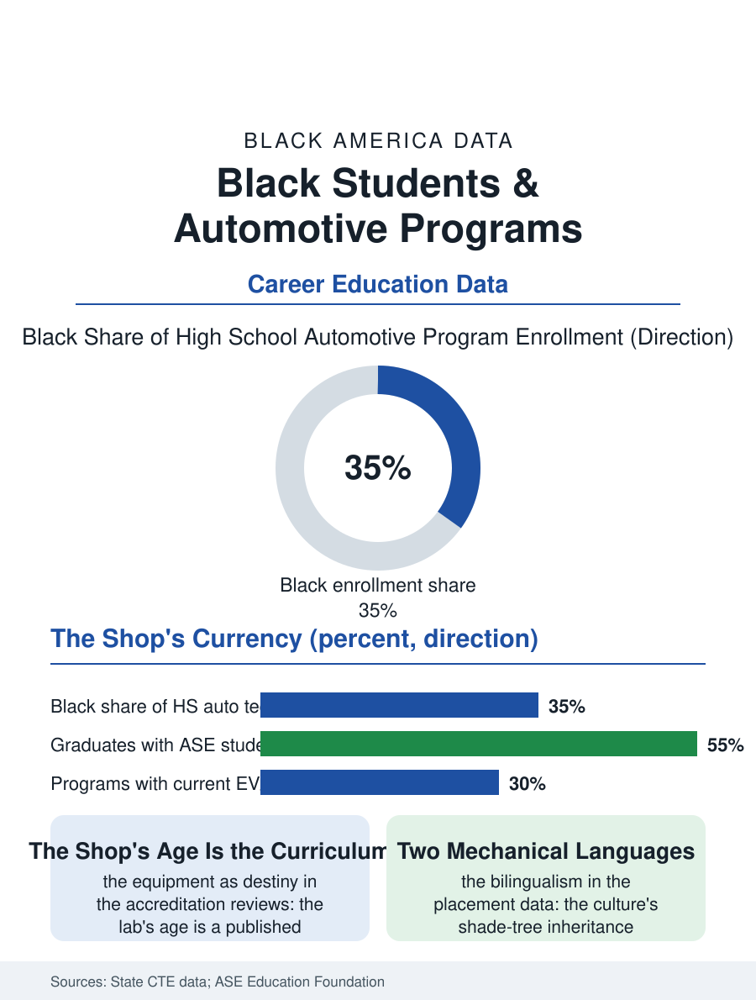

Black Education
The School Garage: Black Students and Automotive Technology
The shade-tree inheritance meets the scan tool in the school's most honest room, its equipment age its destiny. The automotive file.

The automotive technology program is the CTE file's largest shop: the lifts, the scan tools, and the ASE student certifications of the high school garage, whose Black enrollment in the urban districts reflects the car culture's demographics and whose graduates enter the technician file the dealerships cannot fill. This article reads the automotive program file.
The School Garage
The program's capital is its shop, and the shop's currency is the file's equity question in its most expensive form: the modern vehicle's electronics require the scan tools and the lifts and the training vehicles whose cost per program runs to the industry's sponsorship or the district's bond, so that the automotive lab's equipment age is a published figure in the accreditation reviews and a destiny in the graduates' readiness, the student trained on the carburetor entering the hybrid's shop as a historical reenactor. The industry's partnership file is the program's lifeline where it exists, the manufacturers' and dealers' school programs donating the vehicles and the curriculum and hiring from the class in the pattern of the branded pipeline, their map following the dealer map's own geography. The student certification, the ASE entry credentials earned in the program, is the hiring file's document in the welding file's pattern, its possession sorting the graduate's first wage in the placement data. The program's own fleet serves the file's practicum as the cosmetology clinic serves its lab, the teachers' and the community's cars repaired at the school's rates under the instructor's eye, so that the garage's reputation in the neighborhood is a recruiting instrument and a quality audit in one, the customer's return visit being the grade no rubric improves on. The emissions and inspection lane, in the states whose programs run the public's testing, adds the regulatory fluency to the graduate's hand, the state's seal practiced before the diploma.
The Technician Shortage's Door
The labor market awaiting the graduate is the file's wind: the technician shortage in the industry's own counts runs in the tens of thousands of unfilled posts, the flat-rate system's economics awaiting the graduate in the employment file's terms, and the program's placement data in the strong districts are the CTE file's showpiece, the dealers and the fleets and the independents of the auto file bidding for the certified graduate whose alternative, the bachelor's debt file, the recruiters name aloud in the classroom. The electric transition is the curriculum's current rewrite, the high-voltage certification entering the program as the fleet's composition turns, with the districts' capacity to teach it, the vehicle, the tools, the instructor's own certification, being the file's live investment question, the EV's shop otherwise destined to reproduce the equipment gap at the technology's new address.
The Culture's Shop Class
The automotive file closes on the program's cultural ground, because the car in Black America is never only transportation in the files above, and the school garage is where the culture's mechanical inheritance, the shade-tree knowledge of the grandfathers, meets the scan tool's new priesthood, the student translating between them in a bilingualism the industry desperately hires. The program's critics file the tracking brief; its graduates file the pay stubs, and the file's judgment is the placement's: where the shop is current and the certification is earned, the garage is the school's most honest room, its verdicts as unbending as the welding booth's coupon. The association counts the student certifications each year. The file's last entry is the training car's hood closing on a diagnosis the student made and proved, the instructor's nod the only rubric, in the garage where the neighborhood's own sons and daughters are becoming the technicians its cars already need, one correct diagnosis at a time. The diagnostic competitions, the hands-on troubleshooting contests the industry sponsors for the school programs, give the garage its interscholastic season, the trophy case by the shop door being read by the freshmen as the program's promise in the same way the gym's banners are, with the recruiters in the audience. The recruiters' presence at the contest is the placement file's argument in person, the industry's need made visible to the students it courts. The record stands in the program's own hand.
More in Black Education
Black Educational Attainment: High School Parity, the College Gap
About 89 percent of Black adults hold a high school diploma and one in four holds a bachelor's degree or higher — the attainment ladder, the college completion gap, and the generational trend.
Historically Black Colleges and Universities: Enrollment and Degrees
More than 100 HBCUs enroll roughly 290,000 students and award about one in six Black bachelor's degrees — an outsized share from a small sector. The federal education data.
Black College Enrollment: 2.4 Million Students
About 2.4 million Black students are enrolled in American colleges — nearly two-thirds of them women. The NCES enrollment data by sector, level, and trend.
Source: State career and technical education enrollment data; ASE Education Foundation program accreditation data.